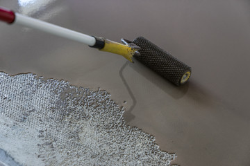
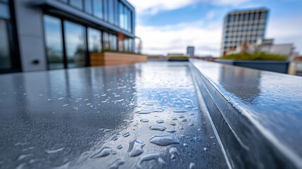
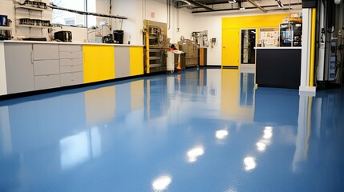
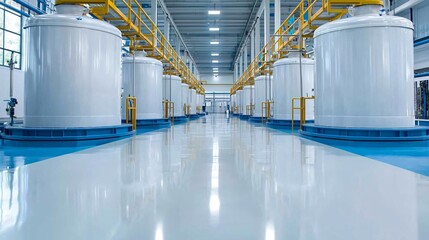

Bodenbeschichtung & Bodenbeläge
Belastbare, abwaschbare Böden für Garage, Keller, Werkstatt, Balkon und Terrasse. Wir beschichten staubfrei, fugenlos und passend zur tatsächlichen Beanspruchung.
Worum es geht

Ein beschichteter Boden ist staubfrei, leicht zu reinigen und hält jahrelang – vorausgesetzt, der Untergrund stimmt. Die Vorbereitung ist hier der kritische Faktor: Wir reinigen, prüfen die Restfeuchte und gleichen Unebenheiten aus, bevor wir beschichten. So löst sich die Beschichtung später nicht ab.
Für wen geeignet: Für Garagen, Keller und Werkstätten, Balkone und Terrassen in Mannheim und Rhein-Neckar-Region – sowie für gewerbliche Lager- und Produktionsflächen auf Anfrage.
Ihr Nutzen auf einen Blick
- Klare Zuordnung von Belastbarkeit und Einsatz: Pkw-Last, Chemikalien, Außenbereich
- Realistische Trocknungszeiten: begehbar nach ca. 24 Stunden, voll belastbar nach mehreren Tagen
- Staubfreie, abwaschbare Oberfläche – deutlich pflegeleichter als roher Beton
Was wir konkret anbieten
Garagen- und Kellerboden
Epoxidharz ist hoch belastbar und beständig gegen Öl und Chemikalien – die typische Wahl für Garage und Werkstatt, wo Reifen und auslaufende Flüssigkeiten den Boden belasten. Polyurethan ist elastischer und verträgt Temperaturschwankungen besser. Wir wählen das System nach Ihrer Nutzung.
Balkon- und Terrassenbeschichtung
Im Außenbereich geht es vor allem um Abdichtung gegen Feuchtigkeit. Wir verwenden abdichtende, rutschhemmende Beschichtungssysteme, die Nässe vom Bauwerk fernhalten und auch bei Regen Trittsicherheit bieten.
Industriebodenbeschichtung
Für Lager- und Produktionsflächen beschichten wir auf Anfrage rutschfest und chemisch beständig – abgestimmt auf Belastung, Reinigung und Nutzung der Fläche.
Der Ablauf
Untergrundprüfung
Wir prüfen Festigkeit und Restfeuchte – ohne tragfähigen Untergrund keine dauerhafte Beschichtung.
Vorbereitung
Reinigen, anschleifen, grundieren und Unebenheiten ausgleichen.
Beschichtung
Auftrag des passenden Systems, auf Wunsch mit rutschhemmender Oberfläche.
Beispiele aus unserer Arbeit



Jetzt Bodenbeschichtung anfragen
Oder Angebot für den Garagenboden anfordern. Wir besichtigen kostenlos und erstellen Ihnen ein verständliches Festpreisangebot.
Jetzt Bodenbeschichtung anfragen Kurzfristig? ☎ 0621 1234567